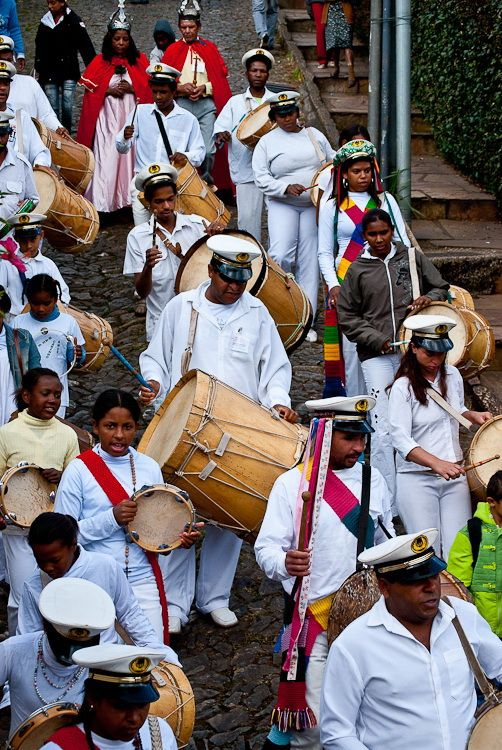
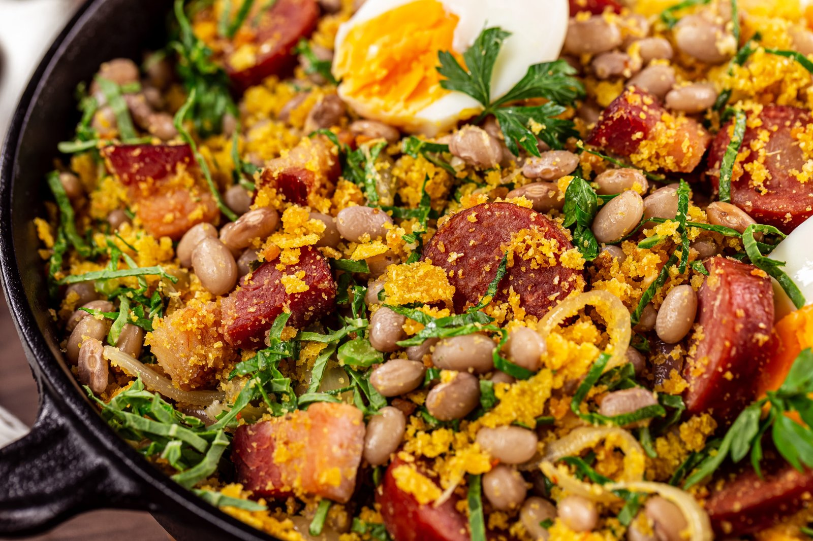

Modo Artesanal de Fazer o Queijo Minas avança em candidatura para Patrimônio Imaterial da Humanidade
Fonte: Agência Brasil / IPHAN · Belo Horizonte (MG)
Clique ou passe o cursor sobre qualquer unidade federativa para abrir o dossiê geográfico, história do ciclo do café/ouro e herança culinária.
Relevo montanhoso recortado pelas serras do Espinhaço e da Mantiqueira, berço dos rios São Francisco e Doce.
Congada e Folia de Reis, barroco de Aleijadinho em Ouro Preto, rodas de viola caipira.
Pão de Queijo Canastra artesanal, Feijão Tropeiro com couve e torresmo, Frango com Quiabo.

Expressão sincretista de matriz afro-brasileira que reencena a coroação dos Reis do Congo com tambores de fuste, chocalhos e fardas ricamente bordadas. Preserva a memória das irmandades negras organizadas no auge da mineração de ouro do século XVIII.
Nascido nos quintais de Tia Ciata e nas pedras da Pequena África no início do século XX. O samba e o choro estabeleceram a síncope definitiva da música brasileira, unindo o cavaquinho melodioso, o surdo de primeira e o pandeiro de couro cru.
Música de rabeca artesanal e tamancos de madeira batidos no tablado de assoalho das comunidades litorâneas. Celebrado tradicionalmente nos mutirões comunitários da pesca de cerco da tainha e nas colheitas de mandioca.
O samba paulistano, forjado na poeira dos terreiros de Barra Funda e Bexiga com o bumbo pesado dos cordões carnavalescos, retrata a resistência das populações operárias e migrantes no tecido da metrópole.
A cura do leite cru nas serras de Minas, o ensopado tradicional e a feijoada carioca de reunião de sexta-feira.

Polvilho azedo escaldado em banha de porco e queijo de leite cru maturado nas serras da Canastra e do Serro. Casquinha estaladiça e miolo aerado elástico.

Feijão preto cozido demoradamente com carnes secas, paio e lombo defumado. Acompanhada por couve cortada finíssima refogada no alho, farofa de manteiga e gomos de laranja fresca.

Doce icônico brasileiro nascido na década de 1940 no Sudeste. Feito na panela com leite condensado, cacau e manteiga de qualidade, enrolado em granulado de chocolate.

Feijão cozido misturado à farinha de milho crocante, pedaços de torresmo sequinho, linguiça caipira, couve e ovos fritos no tacho de ferro das antigas tropas.
“Entre as cristas frias da Mantiqueira e as baías da Guanabara e Vitória, o relevo montanhoso moldou o ritmo do barroco e o desenvolvimento urbano do país.”
O Sudeste concentra os remanescentes mais estratégicos da Mata Atlântica de altitude, abrigando nascentes que abastecem mais de 40% da população brasileira nos eixos do Rio Paraíba do Sul e bacia do Tietê.
O Caminho Velho e o Caminho Novo da Estrada Real conectavam o interior mineiro aos portos de Paraty e Rio de Janeiro, deixando uma teia intacta de vilas de calçamento pé-de-moleque e igrejas rococó.